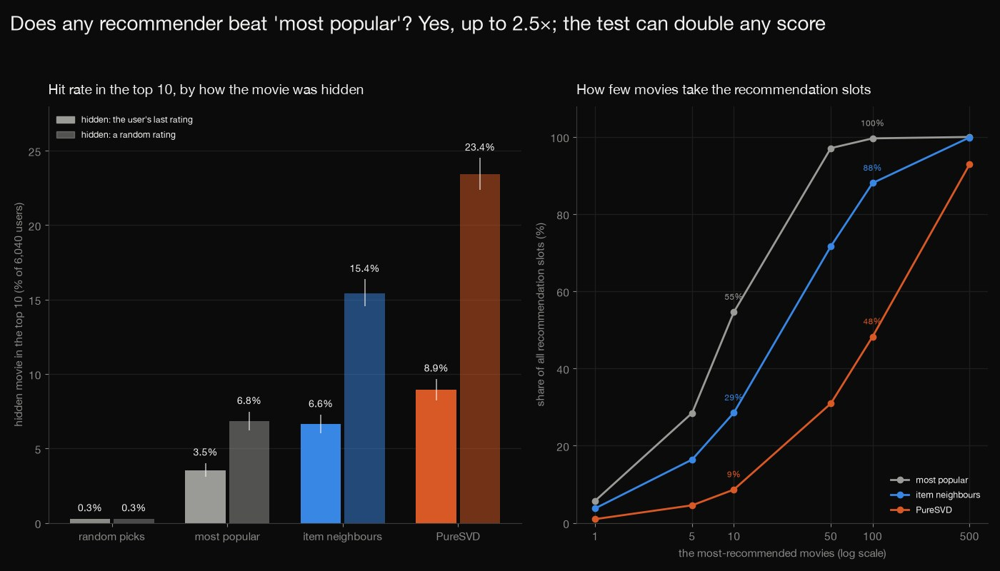
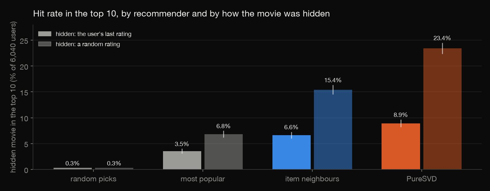
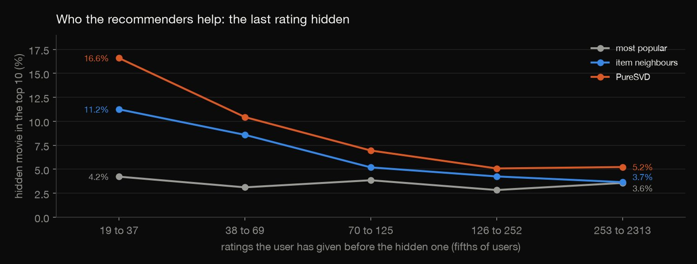
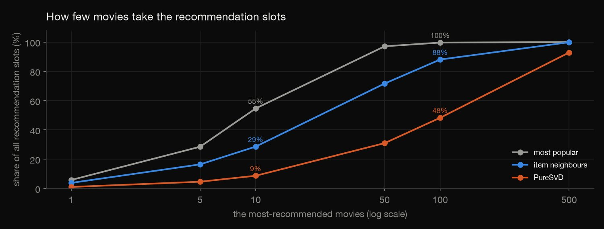
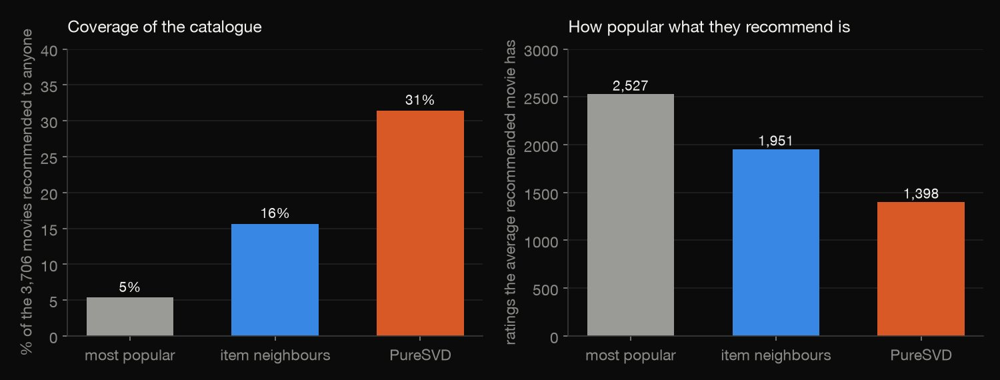
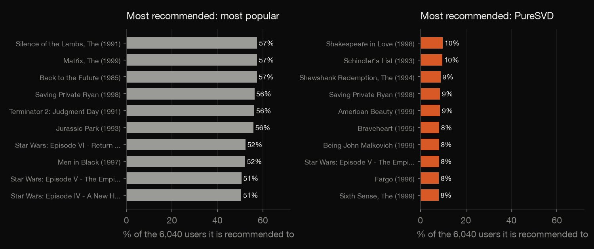

Python · Recommender systems · 2026-10
Does Any Recommender Beat 'Most Popular'?
Four recommenders on MovieLens 1M, tested by hiding one rating per user: with the last rating hidden PureSVD hits 8.9% against 3.5% for the most popular movies (2.5 times), hiding a random rating instead would have made it 3.4 times, and the most popular ten movies fill 55% of the popularity recommender's slots against 9% for PureSVD.

An offline test that predicts which movie a user will rate next, not which they will like: nobody saw the recommendations. One hidden rating per user (6,040 cases); settings fixed, not tuned; old data (2000 to 2003) from a site that was itself recommending movies. MovieLens 1M is licensed for research use, may not be redistributed or used commercially without permission, and GroupLens does not endorse this work: only counts and rankings are published. Cite: Harper and Konstan, 2015, doi 10.1145/2827872.
01 — The problem
Every recommender tutorial ends on a score. Compared with just recommending what everyone watches, how much better is it, and does the way you test it decide the answer?
The task follows GeeksforGeeks' "Product Recommendation Analysis" (build recommenders and evaluate them). The data is the real MovieLens 1M set of 1,000,209 ratings by GroupLens, not a course file.
02 — What I built
Four recommenders, tested the hard way:
- The test: one rating per user hidden, two ways, and the hidden movie ranked among every movie the user has not rated.
- The recommenders: random picks, most popular, item neighbours and PureSVD.
- The questions: hit rate, who is helped, and how few movies fill the slots.
- Check:
check.pyrecomputes every rank in plain Python: 423 numbers.
03 — How it was built
- 01
Download the data set
GroupLens' MovieLens 1M (about 6 MB zipped): 1,000,209 ratings by 6,040 users of 3,706 movies. Its licence allows research use but not redistribution, so none of it is committed; the script keeps the checksums.
URL = "https://files.grouplens.org/datasets/movielens/ml-1m.zip" - 02
Hide one rating per user, two ways
The user's last rating (ties at the same second go to the lower movie id), or a pseudo-random one chosen by a fixed formula. Every rating counts as "watched", so the task is to predict what a user will rate next.
Rt["h"] = (Rt["u"] * 7919 + Rt["m"] * 104729) % 1000003; test = Rt.sort_values(["ui", "h", "mi"]).groupby("ui").head(1) - 03
Rank every unrated movie
Each recommender scores all the movies the user has not rated. Scores are rounded to 1e-9 and ties go to the lower movie, so the rank cannot depend on floating-point noise; the hidden movie's rank gives the hit rate and NDCG at 10.
greater = (Q[tu] > target[:, None]).sum(axis=1); tie = ((Q[tu] == target[:, None]) & (idx < ti[:, None])).sum(axis=1); rank = 1 + greater + tie - 04
Compare them fairly
Wilson intervals for each hit rate, and exact paired tests on the users where exactly one of two recommenders hits; hit rate by fifths of users, the concentration of the recommendations and their coverage.
paired.append({"protocol": pname, "model_a": a, "model_b": b, "only_a_hits": oa, "only_b_hits": ob, "p_value": float(binomtest(min(oa, ob), oa + ob, 0.5).pvalue) if oa + ob else 1.0}) - 05
Recompute it by hand
check.pycounts the co-occurrences of 195 million movie pairs, builds the neighbours, and ranks the hidden movie for every user in plain Python; numpy is used only for PureSVD's factorisation.if q > qt:
04 — Results
The data. 1,000,209 ratings of 3,706 movies by 6,040 users, each with at least 20 ratings (median 96, most 2,314); 4.5% of the user-by-movie matrix is filled. 2,544 users made more than one rating in their last second, so "last" is partly a tie broken by movie id. The table is the hit rate at 10: the share of the 6,040 users whose hidden movie is among the ten recommended, when the user's last rating ("Last") or a random one ("Random") is hidden.
| Hit rate at 10 | Last | Random |
|---|---|---|
| Random picks | 0.3% | 0.3% |
| Most popular | 3.5% | 6.8% |
| Item neighbours | 6.6% | 15.4% |
| PureSVD | 8.9% | 23.4% |

Popularity is a real baseline, and the others beat it. With the user's last rating hidden, most popular hits 3.5% (95% interval 3.1% to 4.0%), item neighbours 6.6% (6.0% to 7.3%) and PureSVD 8.9% (8.2% to 9.7%): 1.9 and 2.5 times the baseline, against 0.3% for ten random picks. On the users where exactly one of two recommenders hits, item neighbours win 283 to 96 against popularity (exact test, p = 1.6 × 10^-22), PureSVD 464 to 138 (p = 3.7 × 10^-42) and 296 to 157 against item neighbours (p = 6.4 × 10^-11).
How the rating is hidden matters. Hiding a random rating instead of the last raises every score: most popular to 6.8% (1.9 times), item neighbours to 15.4% and PureSVD to 23.4% (2.6 times). The ordering is the same, but the claim is not: PureSVD would be 3.4 times the popularity baseline instead of 2.5. The likely reason is that a random rating has the same user's neighbouring ratings in training while the last rating is the future; that was not tested separately.

Who is helped. Users with the fewest earlier ratings (19 to 37, a fifth of users) are hit 16.6% of the time by PureSVD and 11.2% by item neighbours, against 4.2% for most popular. For the fifth with the most (253 to 2,313) the three are 5.2%, 3.7% and 3.6%: the edge almost disappears.
| Recommender | Top 10 | Top 50 | Shown |
|---|---|---|---|
| Most popular | 55% | 97% | 5% |
| Item neighbours | 29% | 72% | 16% |
| PureSVD | 9% | 31% | 31% |


What they recommend. The ten most recommended movies fill 54.6% of the slots of the popularity recommender, 28.6% of item neighbours' and 8.6% of PureSVD's; fifty movies fill 97.1%, 71.7% and 30.9%. They show 5.3%, 15.7% and 31.4% of the 3,706 movies to anyone, and the average movie they recommend has 2,527, 1,951 and 1,398 ratings.

The most recommended movie is Silence of the Lambs, The (1991) for popularity (to 57.5% of users) and Shakespeare in Love (1998) for PureSVD (to 9.8%).
05 — What I'd do next
- Add implicit ALS and a ranking-loss model (BPR), tuned on a validation split, to see how far above PureSVD they get.
- Use a global time split, training only on ratings made before each user's hidden one, to remove the future from the baselines.
- Score what users like instead of what they rate next, counting only hidden ratings of four stars or more.